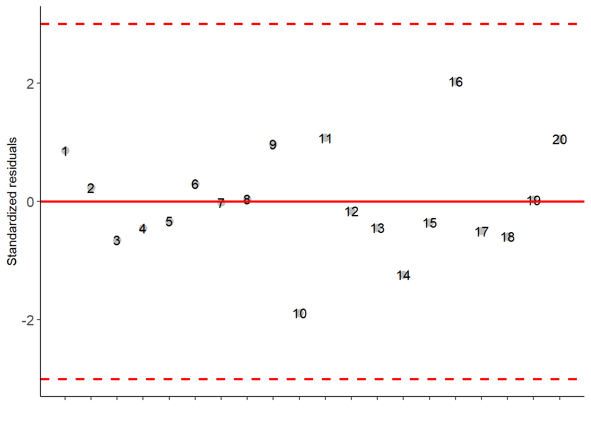
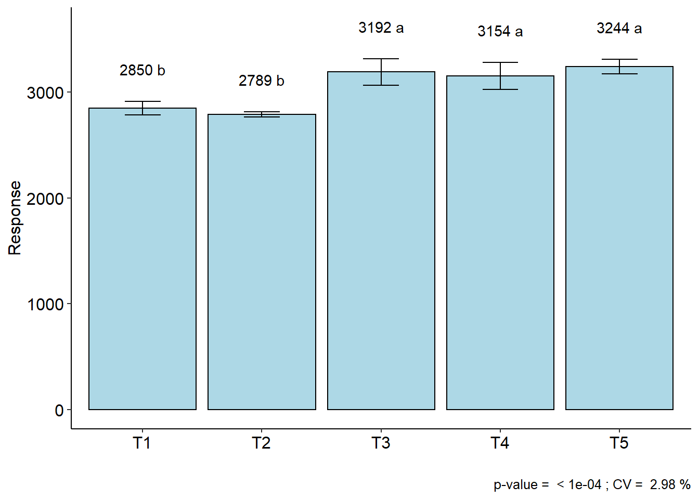

Capítulo 22 Área abaixo da curva
data("simulate1")
# Converting to readable format for function
dados=cbind(simulate1[simulate1$tempo==1,3],
simulate1[simulate1$tempo==2,3],
simulate1[simulate1$tempo==3,3],
simulate1[simulate1$tempo==4,3],
simulate1[simulate1$tempo==5,3],
simulate1[simulate1$tempo==6,3])
colnames(dados)=c(1,2,3,4,5,6)
dados## 1 2 3 4 5 6
## 1 279.30 342.0000 491.6970 652.9091 814.1212 975.3333
## 2 252.70 333.0000 475.5758 636.7879 820.0000 959.2121
## 3 223.44 326.2933 457.8424 619.0545 780.2667 991.0000
## 4 224.77 327.1800 448.0000 669.0000 781.0727 942.2848
## 5 215.46 320.9733 453.0061 614.2182 795.0000 936.6424
## 6 242.06 328.0000 469.1273 630.3394 791.5515 952.7636
## 7 230.09 330.7267 461.8727 623.0848 784.2970 945.5091
## 8 204.82 313.8800 496.0000 647.0000 768.9818 930.1939
## 9 348.46 409.6400 553.0000 778.0000 856.0364 1017.2485
## 10 297.92 375.9467 502.9818 674.0000 825.4061 986.6182
## 11 397.67 393.0000 563.4364 724.6485 885.8606 1047.0727
## 12 348.46 409.6400 533.6121 694.8242 856.0364 1017.2485
## 13 335.16 333.0000 525.5515 735.0000 847.9758 1009.1879
## 14 293.93 373.2867 524.0000 661.7758 835.0000 1001.0000
## 15 336.49 386.0000 526.3576 687.5697 848.7818 1009.9939
## 16 428.26 362.0000 581.9758 743.1879 904.4000 1065.6121
## 17 355.11 414.0733 537.6424 698.8545 860.0667 1021.2788
## 18 324.52 450.0000 555.0000 680.3152 841.5273 1002.7394
## 19 369.74 423.8267 546.5091 707.7212 868.9333 1030.1455
## 20 353.78 413.1867 536.8364 844.0000 859.2606 1020.4727resp=aacp(dados)## [1] 2928.044 2871.320 2790.677 2808.780 2759.249 2816.430 2787.781 2793.369
## [9] 3279.531 3020.604 3289.317 3176.967 3113.701 3041.527 3121.951 3338.500
## [17] 3198.831 3190.472 3246.933 3340.410trat=simulate1$trat[simulate1$tempo==1]
# Analyzing by DIC function
DIC(trat,resp)##
## -----------------------------------------------------------------
## Normality of errors
## -----------------------------------------------------------------
## Method Statistic p.value
## Shapiro-Wilk normality test(W) 0.9649386 0.6464355## As the calculated p-value is greater than the 5% significance level, hypothesis H0 is not rejected. Therefore, errors can be considered normal##
## -----------------------------------------------------------------
## Homogeneity of Variances
## -----------------------------------------------------------------
## Method Statistic p.value
## Bartlett test(Bartlett's K-squared) 7.080008 0.1317201## As the calculated p-value is greater than the 5% significance level,hypothesis H0 is not rejected. Therefore, the variances can be considered homogeneous##
## -----------------------------------------------------------------
## Independence from errors
## -----------------------------------------------------------------
## Method Statistic p.value
## Durbin-Watson test(DW) 2.40295 0.4925488## As the calculated p-value is greater than the 5% significance level, hypothesis H0 is not rejected. Therefore, errors can be considered independent##
## -----------------------------------------------------------------
## Additional Information
## -----------------------------------------------------------------
##
## CV (%) = 2.98
## R-squared = 0.96
## Mean = 3045.7197
## Median = 3077.6143
## Possible outliers = No discrepant point
##
## -----------------------------------------------------------------
## Analysis of Variance
## -----------------------------------------------------------------
## Df Sum Sq Mean.Sq F value Pr(F)
## trat 4 706357.0 176589.259 21.41243 4.653501e-06
## Residuals 15 123705.7 8247.045## As the calculated p-value, it is less than the 5% significance level.The hypothesis H0 of equality of means is rejected. Therefore, at least two treatments differ##
##
## -----------------------------------------------------------------
## Multiple Comparison Test
## -----------------------------------------------------------------
## resp groups
## T5 3244.162 a
## T3 3191.605 a
## T4 3153.920 a
## T1 2849.705 b
## T2 2789.207 b## 